## Hacking ASTs
## Me (Alex)
I *like* to build JavaScript programs
8 inch vertical jump
*Bench* 115 lbs
*Squat* 250 lbs
# *WTF* is an *AST*?
## *WTF* is an *AST*?
A) Aslan Strawberry Trolley
B) African Stipulation Treatment
C) Abstract Syntax Tree
D) Alaskan Simulation Trampoline
## *WTF* is an *AST*?
A) Aslan Strawberry Trolley
B) African Stipulation Treatment
C) Abstract Syntax Tree
D) Alaskan Simulation Trampoline

# *A*bstract
This just means that everybody does it differently,
and that no one has to document anything ever,
probably
# *S*yntax
Most of the time we're dealing with some sort of language
or DSL that we're trying to parse, though this isn't strict
# *T*ree
It is respresented in a *tree* data structure, but those
aren't native to JavaScript, so it's just objects of
arrays of objects
# *T*ree
You'll probably need to use recursion
(cue mass exodus)
------------
# How are they made?
By parsers!
Some people write parsers by hand, but there are automatic parser generators that are easier to quickly discuss
The first step is defining a grammar. A set of rules about what means what.
Grammar for addition only math problems:
// Base Types
number -> /(\d+)/
operator -> /(\+)/
whitespace -> /\s+/
// Complex Parts
operationRightSide -> operator whitespace? number
// All together now
operation -> number whitespace? operationRightSide+
Then define some objects that describe the different parts
number = { nodeType: 'number', value: $0 }
operator = { nodeType: 'operator', value: $0 }
whitespace = {} // we dont really care
operationRightSide -> { nodeType: 'operationRightSide', statements: [$operatorNode, $numberNode] }
operation -> { nodeType: 'operation', statements: [$numberNode, $operationRightSideNode, ...] }
"1 + 2"
program = {
nodeType : 'operation',
statements : [
{
nodeType : 'number',
value : "1"
},
{
nodeType : 'operationRightSide',
statements : [
{
nodeType : 'operator',
value : '+'
},
{
nodeType : 'number',
value : '2'
}
]
}
]
};
---------------------------------------------
"1 + 2 + 3"
program = {
nodeType : 'operation',
statements : [
{
nodeType : 'number',
value : "1"
},
{
nodeType : 'operationRightSide',
statements : [
{
nodeType : 'operator',
value : '+'
},
{
nodeType : 'number',
value : '2'
}
]
},
{
nodeType : 'operationRightSide',
statements : [
{
nodeType : 'operator',
value : '+'
},
{
nodeType : 'number',
value : '3'
}
]
}
]
};
-----------------------------------------------
Later someone writes a compiler to read this in, and spit out executable code
in JS this wouldn't be that interesting, but it could be for more complex DSLs
-----------------------------------------------
So lots of things are parsed like this (or similar):
Javascript
CSS
--- but commonly in js ---
Stylus/SASS/Less
Mustache/Handlebars/many templating langs
MessageFormat (i18n)
CoffeeScript/TypeScript/Dart
-----------------------------------------------
What does this do for us?
EASY introspection
-------------------
We have an easily* traversible representation of the parsed lang
this is *data*
-------------------
THE KEY
We have a MUTABLE set of data that is later turned into executable code
--------------------
So what happens if we F**k with it? ;)
lots.
--------------------
A compiler just needs a valid AST to do its job. So if we want to change
things, we just need to keep it to things the compiler understands.
--------------------
# Some hacking I've done
Templates.
---------------------
Templates kind of suck to get set up in a lot of cases
var template = "
";
var insideTemplate = "{{.}}!";
var compiledInsideTemplate = Handlebars.compile(insideTemplate);
Handlebars.registerPartial('insideTemplate', compiledInsideTemplate);
var customHelper = function (data, options) {
return '' + options.fn(data) + '';
};
Handlebars.registerHelper('customHelper', customHelper);
var compiledTemplate = Handlebars.compile(template);
// FINALLY
compiledTemplate({...}); // valid output
--------------------
We can do way better than that.
---------------------
What if we parse the template first without compiling?
var template = "
";
var AST = Handlebars.parse(template);
---------------------
now we can go through and find every helper that we
need, and every partial that we use, and automatically
go get them off the file system, and regsiter them.
// simplified
{
nodeType: 'helper',
name : 'customHelper'
}
// Fire off a call to get 'helpers/customerHelper.js' off the file system and register it
---------------------
If you add a real dependency management system to this you get my require-handlebars-plugin project.
It will recursively traverse through a template's AST and find every partial, and list it as a dependency
for that template 'module', and does the same for helpers. When it loads the sub-templates the same
process happens again and again until all the dependencies are resolved.
In build mode, I can 'precompile' these directly into AMD modules
// demo
---------------------
But what about *messing* with the AST?
----------------------
I personally do this for a couple common reasons:
Conditional SEO output on the server
International message switching
----------------------
# A template with server-only parts
{{#serveronly}}
{{/serveronly}}
...
- In the old world, since you need the `serveronly` block somewhere,
it'd get included in the precompiled template that only runs in the client
even though there is no possibility that it could run in that environment.
-- Now
We can parse through the template a _build_ time, and delete those blocks from the AST before it gets precompiled.
boom.
---------------------
# Internationalization Message Switching
If you want to internationalize that, you could do this:
Now we can go through all the templates before we build, and precompile our i18n messages into functions.
Register those functions as unique handlebars helpers, and then replace the entire block with a helper node.
so once it's compiled, it's:
and
define('_i18n_submitkey', ['Handlebars', 'messageformat'], function (Handlebars, Messageformat) {
var func = function(d){
var r = "";
r += "Click here to delete the ";
if(!d){
throw new Error("MessageFormat: No data passed to function.");
}
var lastkey_1 = "NUMMSG";
var k_1=d[lastkey_1];
var off_0 = 0;
var pf_0 = {
"one" : function(d){
var r = "";
r += "message";
return r;
},
"other" : function(d){
var r = "";
r += "messages";
return r;
}
};
if ( pf_0[ k_1 + "" ] ) {
r += pf_0[ k_1 + "" ]( d );
}
else {
r += (pf_0[ MessageFormat.locale["en"]( k_1 - off_0 ) ] || pf_0[ "other" ] )( d );
}
return r;
};
Handlebars.registerHelper('_i18n_submitkey', func);
return func;
});
## Questions?
### Alex Sexton | @SlexAxton | [alexsexton.com](http://alexsexton.com)